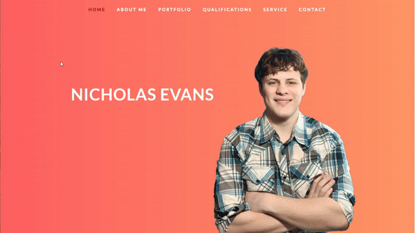
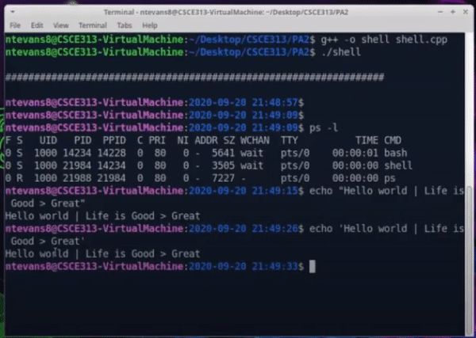
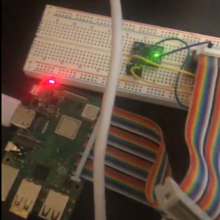

HTML/CSS Website
This project is my personal website that you are currently viewing! When working at Huffman, I was tasked to design multiple websites for their real estate developments using WordPress, but in my Programming Studio at Texas A&M, I learned and developed this website using HTML, CSS, and JavaScript. I developed and designed the website from scratch and created it college to be technical, and responsive to all devices such as tablet, mobile, laptop, and monitor. This website was entered into a website competition hosted by the Computer Science department at A&M and was selected as a winner.
GitHub LinkLinux Shell
This code I developed uses fork (), exec(), pipe(), and other commands to recreate the Linux terminal. I designed it to constantly prompt the user until they send an “exit” command. You can enter directories, use "ls" to see each file, its type, if it is a link, etc., and even run multiple commands at once with the pipe() command. The code also takes care of zombie processes so that the computer doesn’t slow down, and the overall design of the shell is similar to the appearance of the Linux shell.
GitHub Link / Demo VideoTCP Server/Client

This program was created in C++ and uses TCP connections and threading to communicate with other devices on the same network. The two devices can then connect to each other and send data or transfer files with zero corruption. You can choose number of worker channels and max buffer size based on the size of the file/data you’re transferring.
GitHub Link / Demo VideoStep Counter
Using a Raspberry Pi, accelerometer, and Python, we were able to create a product that could count the total number of steps taken by the wearer when applied to the wrist. A smoothing filter was applied to the data received by the accelerometer to make it easy to detect when the user takes a step. The next step in this project would be to make the entire product be able to comfortably fit on the wrist.
GitHub Link / Demo Video